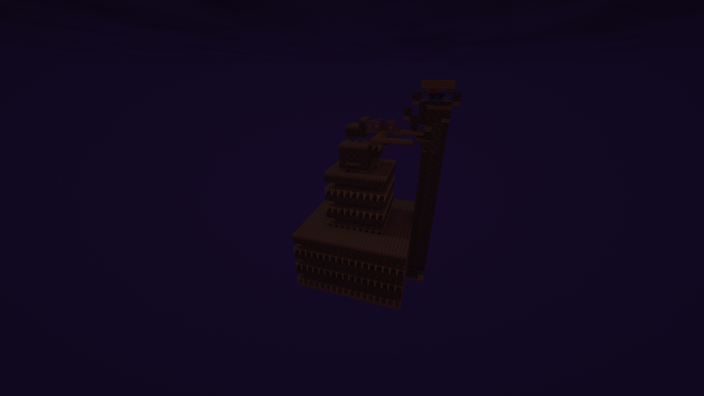
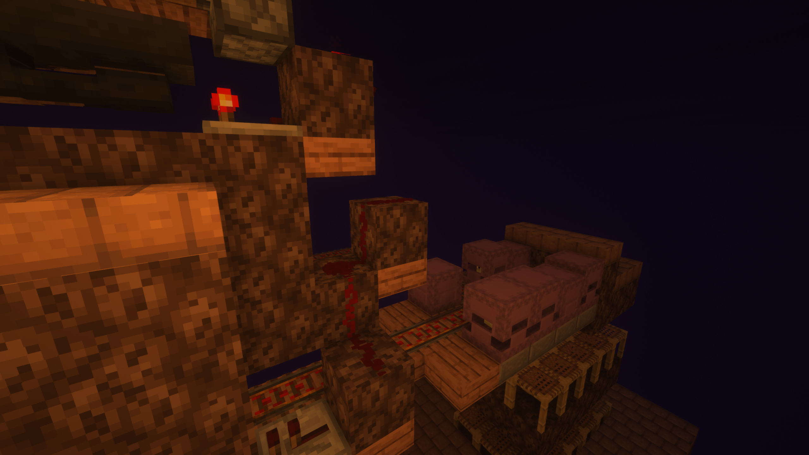
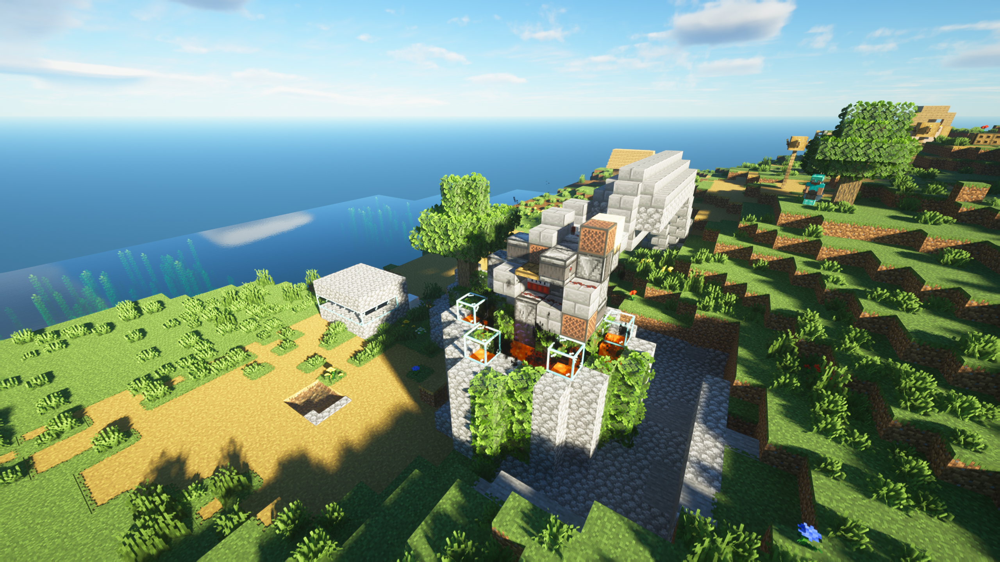
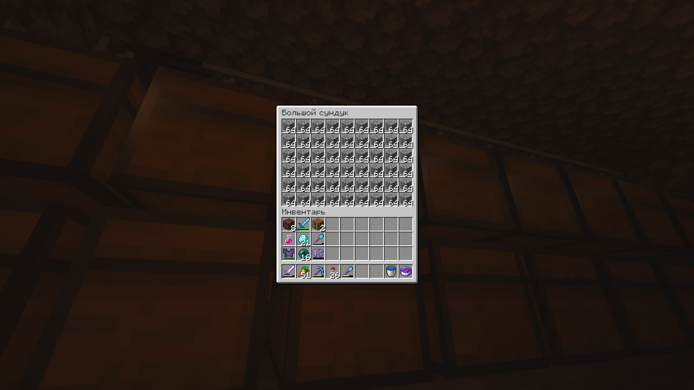
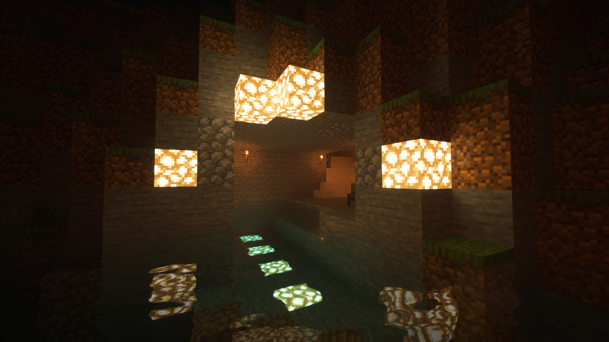
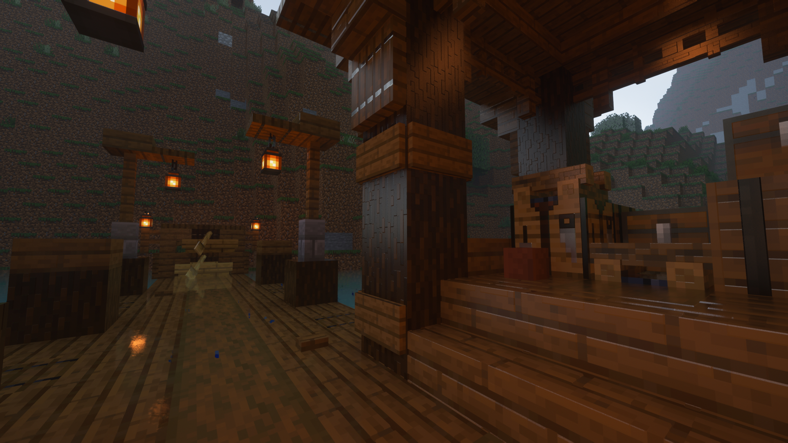
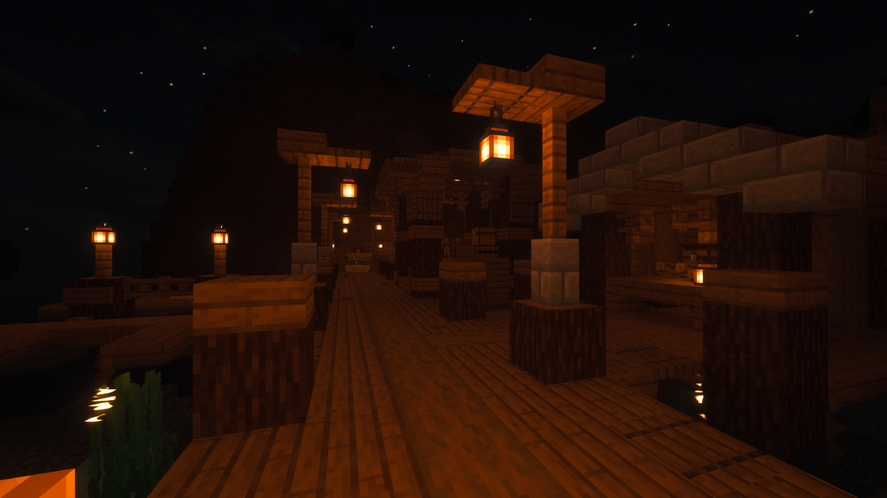
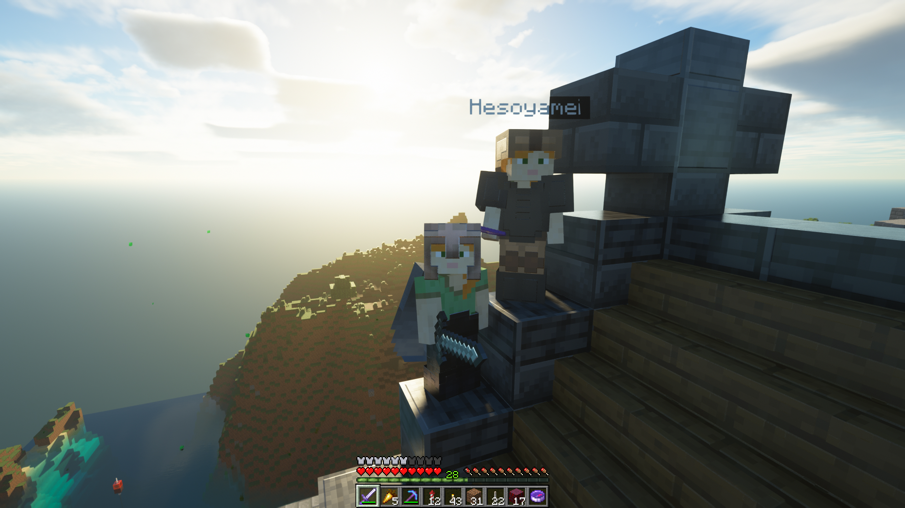
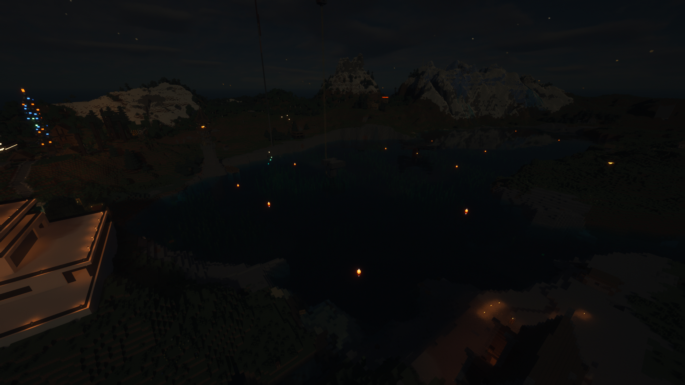
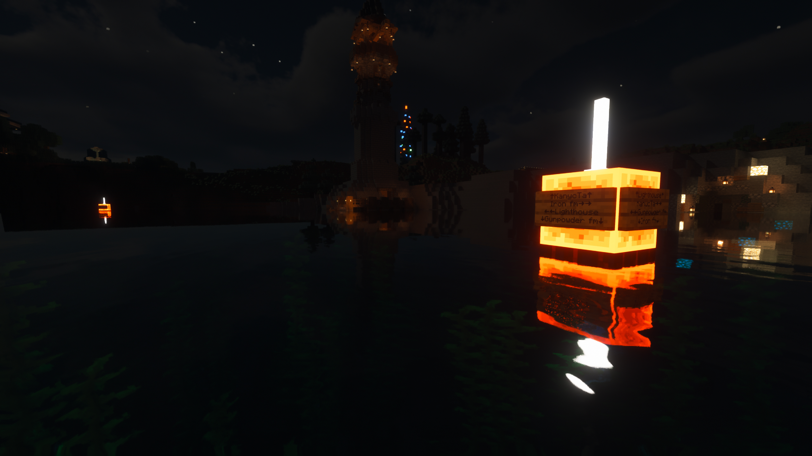

Игроками zaaye и Andruxa построена ферма шалкеров приносящая 200 шалкеров в час. Она понадобилась из-за
секретного проекта игрока Andruxa, огромной постройке, которую он всё ещё хранит в тайне, известно только, что
она будет служить для всех и, как он говорит, "разделит сервер на до и после". Ферма построена в городе энда
левого портала, высоко в небе.


01.04.2023 21:40
Игроками SnusMage и Andruxa построена ферма булыжника способная добывать около 80000 блоков в час.
Понадобилась она всвязи с тем, что был задуман проект огромной постройки требующей большого количества ресурсов.
Что это за постройка остаётся секретом.
Ферма вышла очень похожей на атомный реактор: лава в ней выглядит, как стержни, при включении идёт дым, так как
ферма основана на динамите, если приблизится к ней во время работы будет наносится урон будто от радиации, после
выключения ферма ещё некоторое время работает а под конец ускоряется прям как на ЧАЭС. Для включения фермы надо
сначала переключить рычаг в выключенное состояние, подождать три секунды, после чего резко переключить рычаг во
включенное и снова в выключенное положение (издать короткий сигнал). Для выключения перевести рычаг во включенное
состояние. Ферма расположена в заброшенной деревни между базами игроков Andruxa и SnusMage, из деревни в будущем
планируется сделать научный городок. У фермы в деревни сделан причал, он входит в рамки проекта морского сообщения
между базами игроков.



01.04.2023 1:30
Игрок Hesoyameii построил причал у стен своего королевства. На причале имеется будка смотрителя и складской домик.
Вход на причал осуществляется через первый тонель подземелий замка, в дальнейшем игрок Hesoyameii планирует увиличевать
их число. Также данные подземелья в будущем могут перевести в общий проект подземных транспортных комуникаций между базами
игроков. Данный причал входит в рамки проекта морского сообщения между базами игроков.


01.04.2023 1:30
Игрок Hesoyameii построил дома в своём королевстве. Територия за основным замком игрока Hesoyameii давно
стояла без дела. Теперь там оасположены несколько зданий, являющихся толчком к дальнейшему строительству города
королевства. Одно из сданий это кабак в котором можно поесть, выпить и переночевать в комнатах для гостей. Второе
это небольшёй сарай у кабака. Третье сдание это дом крестьянина, на первом итоже которого распологается общая комната
и кабинет главы семейства, а на втором спальня, также в доме есть небольшоё погреб. Около дамов стоит башня города.
31.03.2023 8:21
Спустя продолжительное время на сервер вернулся игрок Hesoyameii. Его отсутствие было связано с техническими неполадками.
Теперь наконец его владения не будут простаивать, Hesoyameii уже имеет планы по дальнейшему расширению своих территорий.
Появились слухи о том, что он планирует сделать что-то на подобии подземных катакомб, соединяющих всю территорию его базы.
В дальнейшем подобное сооружение может перейти в такой новый общий проект игроков как метро. Также Hesoyameii заявил, что планирует
сделать выход базы к воде, в каком виде это будет реализовано он не пояснял, но точно понятно, что это будет очередное сооружение
входящее в рамки проекта морского сообщения между базами игроков. Ну и что самое главное, пёс по кличке Мопед наконец-то дождался
своего хозяина!

29.03.2023 7:00
Расставлены навигационные буйки. Они позволяют легко Ориентироватся на воде в любое время суток даже новичкам.
Они имеют со всех сторон таблички с указанием ближайших построек. Построены из блока редстоуна, что даёт характерное
красное свечение позволяющее обнаружить буйки. Для людей не имеющих шейдеров сверху расположены стержни энда, дающие
свет в размере 13 единиц. Снизу буйки имеюд блок багрового дерева и закреплены цепью. Также придумана морская навигационная
система, включающая в себя регламент знаков(буйков или причалов), буйки должны распологатся так, чтобы в случае неоднозначного
маршрута, например развилки или поворота, всегда был ориентир, также все действующие причалы должны быть подсвечены и иметь
информационные таблички схожие с теми, что стоят на буйках. Данные правила и постройка входят в рамки
проекта морского сообщения между базами игроков.


28.03.2023 23:30
Прорыт тонель соединяющий реку, проходящую у домов игроков zaaye и KanycTa, и море с фермами. Тонель сделан
маленький в стиле заброшенной канавы. Были использованы различные блоки в качестве украшений, а также проведено
две экспедиции по добычи светящегося лишайника и замшелого булыжника. Теперь базы игроков zaaye и KanycTa соеденены
с остальными через морское сообщение. Данная постройка входит в рамки проекта морского сообщения между базами игроков.
28.03.2023 18:30
Прорыт канал соединяющий дома игроков zaaye и KanycTa. Так как на месте предпологаемого канала распологалось возвышение,
было принято решение делать его в обход по одной из тупиковых рек, распологающихся по сторонам возвышения. По итогу оказалось,
что самым лучшим решением было сделать из возвышения островок, который со всех сторон окружён водой, прорыв сразу два канала по
обоим тупиковым рекам. Также был построен мост с большой земли к островку. Теперь есть водное сообщение между базами игроков
zaaye и KanycTa. Это сооружение входит в рамки проекта морского сообщения между базами игроков.
28.03.2023 6:00
Построен тонель под домом игрока Andruxa, соединяющий море с фермами
и пролив начинающийся от дома игрока Hesoyameii, проходящий через деревню
контралируемую игроком kto, и продолжающийся к неизведаным территориям.
Этот тонель входит в рамки проекта морского сообщения между базами игроков.
Также намечан план дальнейшего выполнения проекта, а точнее создание канала соединяющего
дома игроков zaaye и KanycTa, тоннеля позволяющего от дома игрока KanycTa выплыть в море с фермами.
Возникли сложности с логистикой домов игроков Fantomvoodo и ZewRield.